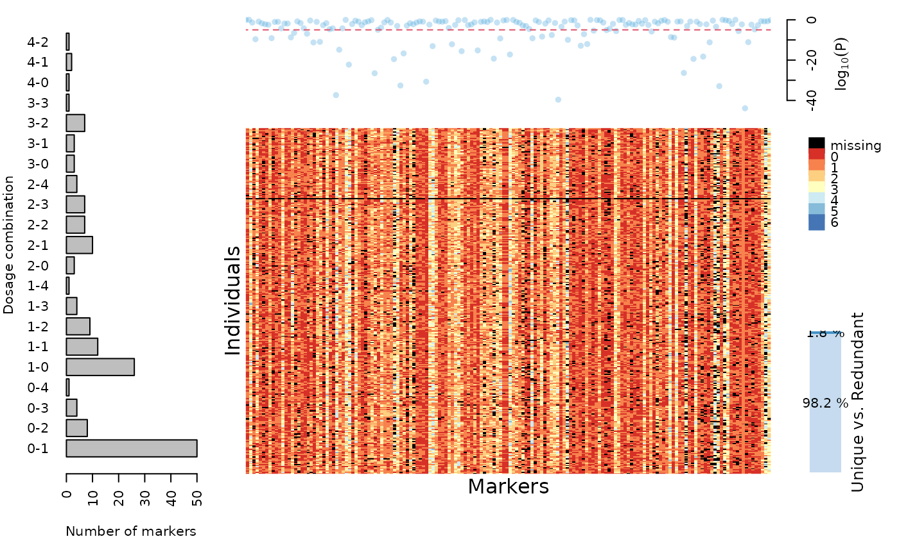

Reads an external VCF file and creates an object of class mappoly.data
read_vcf(
file.in,
parent.1,
parent.2,
ploidy = NA,
filter.non.conforming = TRUE,
thresh.line = 0.05,
min.gt.depth = 0,
min.av.depth = 0,
max.missing = 1,
elim.redundant = TRUE,
verbose = TRUE,
read.geno.prob = FALSE,
prob.thres = 0.95
)a character string with the name of (or full path to) the input file which contains the data (VCF format)
a character string containing the name of parent 1
a character string containing the name of parent 2
the species ploidy (optional, it will be automatically detected)
if TRUE (default) converts data points with unexpected
genotypes (i.e. no double reduction) to 'NA'. See function segreg_poly
for information on expected classes and their respective frequencies.
threshold used for p-values on segregation test (default = 0.05)
minimum genotype depth to keep information.
If the genotype depth is below min.gt.depth,
it will be replaced with NA (default = 0)
minimum average depth to keep markers (default = 0)
maximum proportion of missing data to keep markers (range = 0-1; default = 1)
logical. If TRUE (default), removes redundant markers
during map construction, keeping them annotated to export to the final map.
if TRUE (default), the current progress is shown; if
FALSE, no output is produced
If genotypic probabilities are available (PL field),
generates a probability-based dataframe (default = FALSE).
probability threshold to associate a marker call to a
dosage. Markers with maximum genotype probability smaller than prob.thres
are considered as missing data for the dosage calling purposes (default = 0.95)
An object of class mappoly.data which contains a
list with the following components:
ploidy level
number individuals
total number of markers
the names of the individuals
the names of the markers
a vector containing the dosage in
parent P for all n.mrk markers
a vector containing the dosage in
parent Q for all n.mrk markers
a vector indicating which sequence each marker belongs. Zero indicates that the marker was not assigned to any sequence
Physical position of the markers into the sequence
Reference base used for each marker (i.e. A, T, C, G)
Alternative base used for each marker (i.e. A, T, C, G)
(unused field)
a matrix containing the dosage for each markers (rows)
for each individual (columns). Missing data are represented by
ploidy_level + 1
a dataframe containing all genotypic probabilities columns for each
marker and individual combination (rows). Missing data are represented by
ploidy_level + 1
(unused field)
(unused field)
DP information for all markers on VCF file
a vector containing p-values related to the chi-squared test of Mendelian segregation performed for all markers
if elim.redundant = TRUE, holds all non-redundant markers
if elim.redundant = TRUE, holds all non-redundant markers and its equivalence to the redundant ones
This function can handle .vcf files versions 4.0 or higher. The ploidy can be automatically detected, but it is highly recommended that you inform it to check for mismatches. All individual and marker names will be kept as they are in the .vcf file.
Mollinari M., Olukolu B. A., Pereira G. da S., Khan A., Gemenet D., Yencho G. C., Zeng Z-B. (2020), Unraveling the Hexaploid Sweetpotato Inheritance Using Ultra-Dense Multilocus Mapping, _G3: Genes, Genomes, Genetics_. doi:10.1534/g3.119.400620
Mollinari, M., and Garcia, A. A. F. (2019) Linkage analysis and haplotype phasing in experimental autopolyploid populations with high ploidy level using hidden Markov models, _G3: Genes, Genomes, Genetics_. doi:10.1534/g3.119.400378
# \donttest{
## Hexaploid sweetpotato: Subset of chromosome 3
fl = "https://github.com/mmollina/MAPpoly_vignettes/raw/master/data/sweet_sample_ch3.vcf.gz"
tempfl <- tempfile(pattern = 'chr3_', fileext = '.vcf.gz')
download.file(fl, destfile = tempfl)
dat.dose.vcf = read_vcf(file = tempfl, parent.1 = "PARENT1", parent.2 = "PARENT2")
#> Reading data...
#> Scanning file to determine attributes.
#> File attributes:
#> meta lines: 8
#> header_line: 9
#> variant count: 200
#> column count: 326
#>
Meta line 8 read in.
#> All meta lines processed.
#> gt matrix initialized.
#> Character matrix gt created.
#> Character matrix gt rows: 200
#> Character matrix gt cols: 326
#> skip: 0
#> nrows: 200
#> row_num: 0
#>
Processed variant: 200
#> All variants processed
#> Processing genotypes...Done!
#> Selected ploidy: 6
#> Done!
#> Read the following data:
#> Ploidy level: 6
#> No. individuals: 315
#> No. markers: 167
#> No. informative markers: 167 (100%)
#> This dataset contains chromosome information.
#> ...
#> Done with reading.
#> Filtering non-conforming markers.
#> ...
#> Performing chi-square test.
#> ...
#> Done.
print(dat.dose.vcf)
#> This is an object of class 'mappoly.data'
#> Ploidy level: 6
#> No. individuals: 315
#> No. markers: 164
#> Missing data under prob. threshold: 6.01%
#> Redundant markers: 1.8%
#>
#> No. markers per chromosome: not available
#> ----------
#> No. of markers per dosage combination in both parents:
#> P1 P2 freq
#> 0 1 50
#> 0 2 8
#> 0 3 4
#> 0 4 1
#> 1 0 26
#> 1 1 12
#> 1 2 9
#> 1 3 4
#> 1 4 1
#> 2 0 3
#> 2 1 10
#> 2 2 7
#> 2 3 7
#> 2 4 4
#> 3 0 3
#> 3 1 3
#> 3 2 7
#> 3 3 1
#> 4 0 1
#> 4 1 2
#> 4 2 1
plot(dat.dose.vcf)

# }